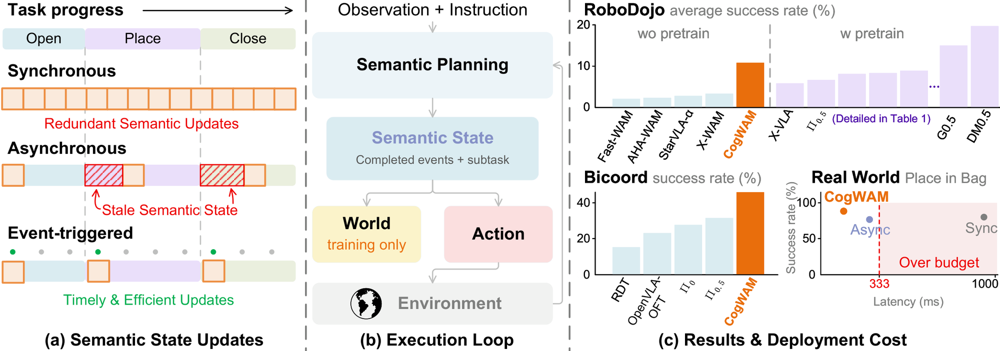
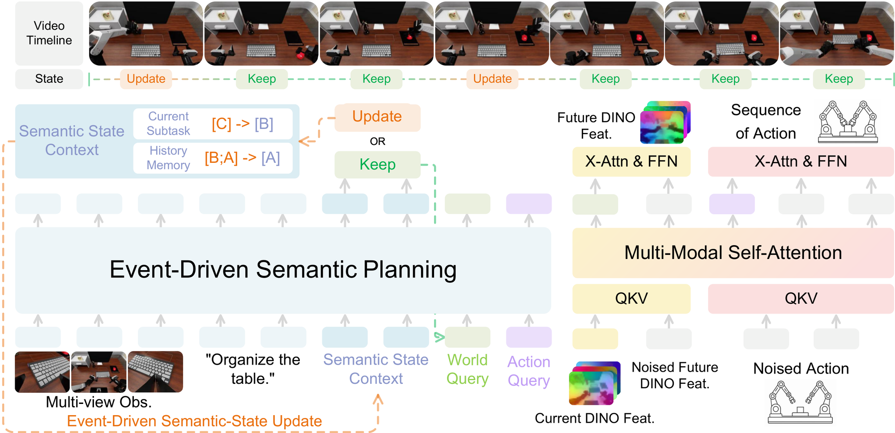
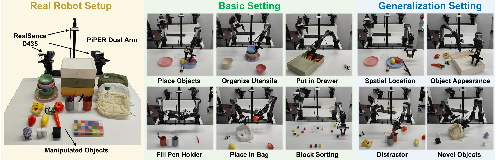
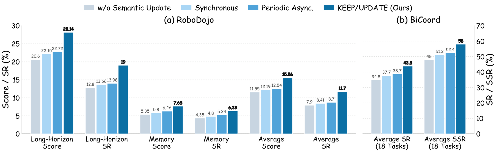

A persistent Semantic State that a robot policy rewrites only when the task actually moves on — not on a fixed clock, and not by re-planning from scratch every step.

Long-horizon manipulation needs more than the current camera frame: a policy has to remember what it already finished and what it is doing now. CogWAM keeps that as an explicit, persistent Semantic State — completed events plus the active subtask — and updates it only when a lightweight KEEP / UPDATE decision says the task has actually moved on. That state conditions two query streams, WORLD and ACTION, that share one backbone but specialize toward future-latent prediction and control respectively. Future prediction is a training-time objective only: at inference the World stream is dropped, and actions are generated directly from the observation and the maintained Semantic State — not from an imagined future.
A five-minute tour of the two mechanisms that make the Semantic State useful: how it decides when to change, and how it reaches the physical model.

At every replanning step the model predicts KEEP or UPDATE from a single forward pass. KEEP costs nothing further. UPDATE additionally generates a memory increment and the new active subtask, autoregressively, and only then. The state can persist across many action chunks — it changes when the task does, not on a fixed clock.
Two learnable query sets are appended after the observation, instruction, and Semantic State in one causal sequence. Both read the same task-progress context, but their hidden states are routed to different objectives — WORLD toward future multi-view DINO latents, ACTION toward the control chunk — so the two branches share semantics while keeping objective-specific representations.
Semantic transitions are rare, so training oversamples UPDATE events and the near-boundary "hard KEEP" cases that look almost like a transition. A scheduled probability also swaps in the model's own predicted state during training, closing the gap to closed-loop inference where the annotated state is never available.
Six multi-stage tabletop tasks on a dual-arm setup, plus four controlled distribution shifts, evaluated closed-loop.

RoboDojo evaluates 42 tasks across five capability dimensions. Clips below are real rollouts of the checkpoint below — not cherry-picked renders.
Numbers below are exactly as reported in the paper. CogWAM uses no prior embodied robot-data pre-training in any of these tables.
Each cell is Score / Success Rate (%), averaged over five capability dimensions.
Six of 18 tasks with the longest expert trajectories are shown; Average is over all 18. Each cell is Stage-wise Success Rate / Success Rate (%).
Success counts, 20 trials per basic task (120 total) and 30 trials per generalization dimension across all six tasks (120 total).
Measured on the real robot at a 30 Hz control loop with a 333 ms replanning budget (NVIDIA RTX 5090).

@article{wang2026cogwam,
title={CogWAM: Aligning Semantic Cognition with World Action Modeling via Event-Driven Interfaces},
author={Wang, Sen and Liu, Liu and Wang, Xinjiang and Chen, Zequn and Jiang, Haoyi and Ding, Taojun and Xiao, Tingyang and Su, Zhizhong and Wang, Jie and Zhou, Sanping},
journal={arXiv preprint arXiv:2609.37721},
year={2026}
}